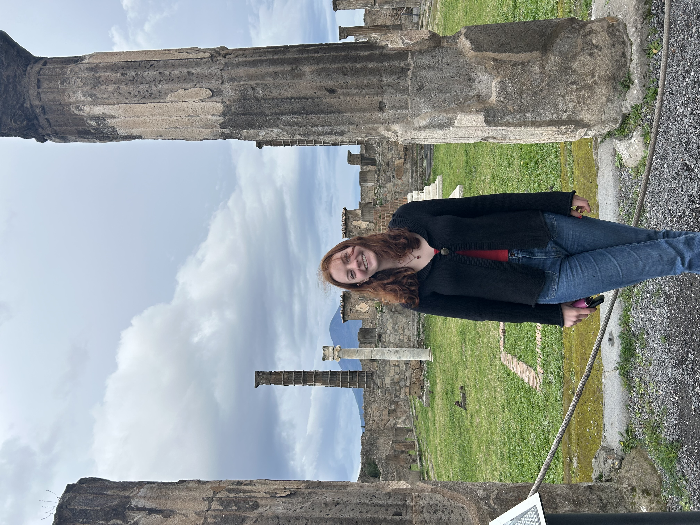
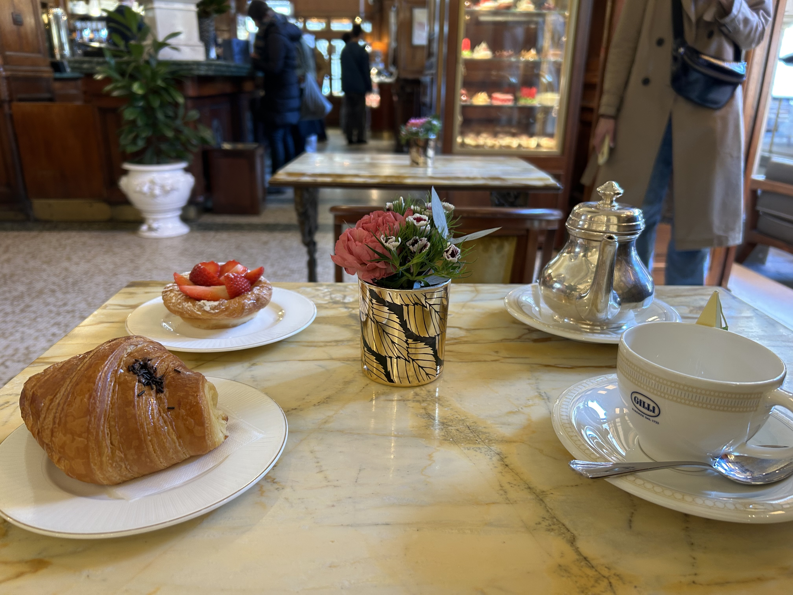
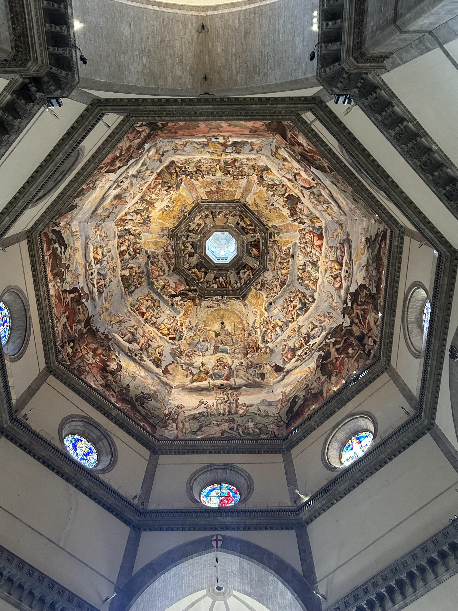
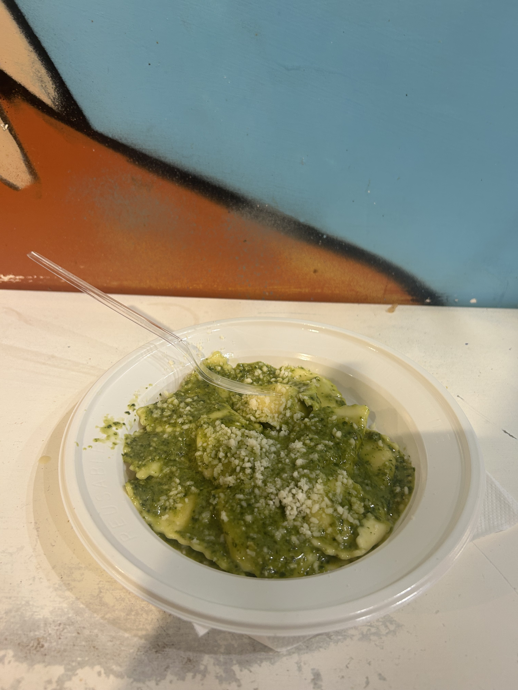
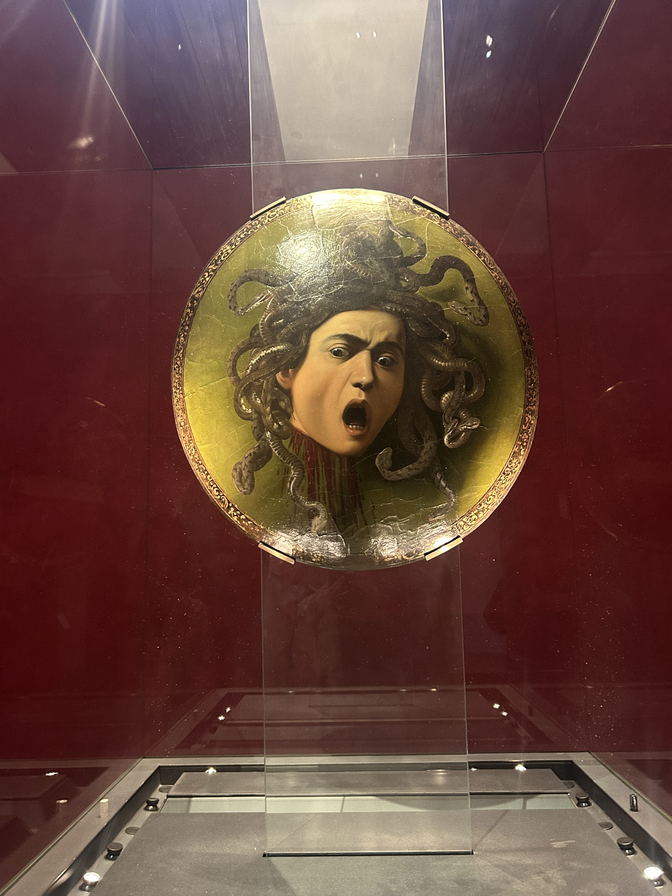
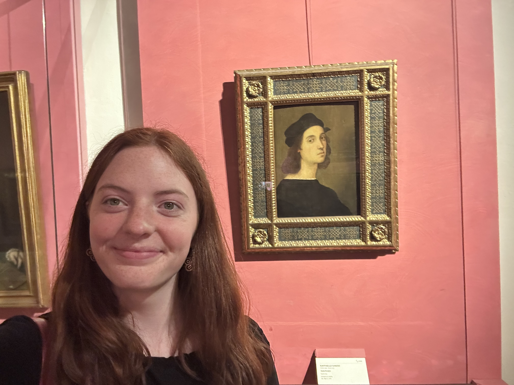
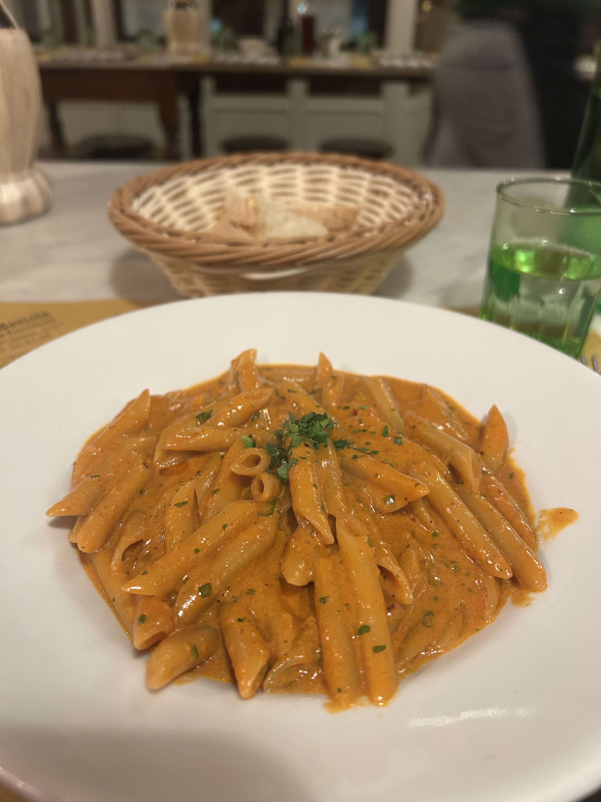
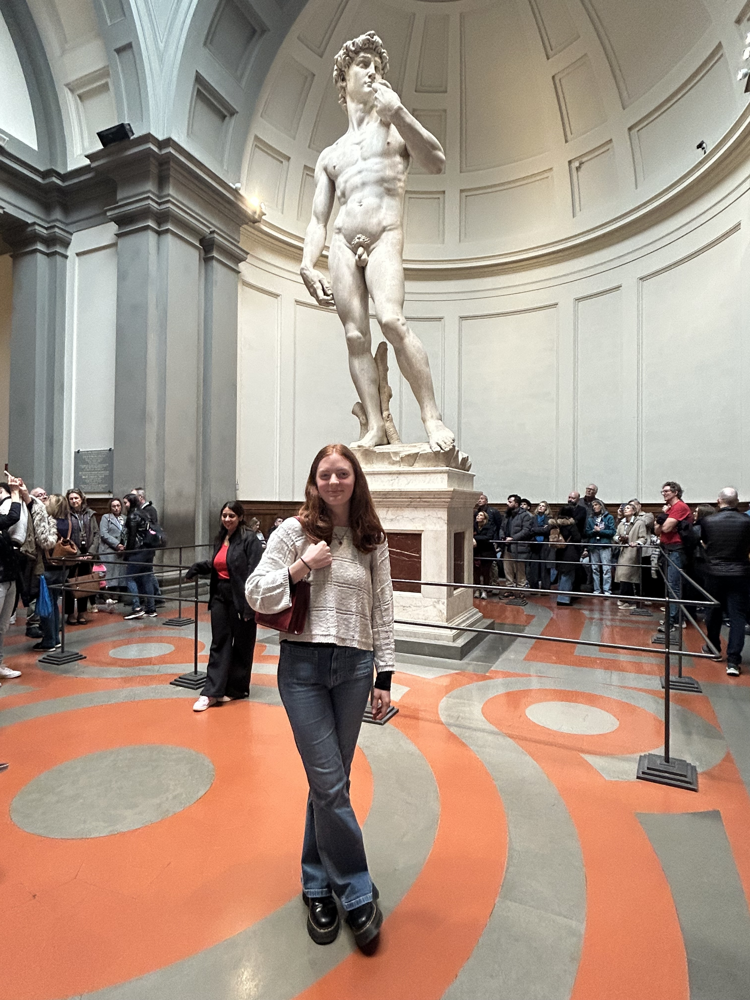

Naples
January 17-19
Solo weekend trip to Naples! I was very worried I was taking the wrong train so I asked four different people if I was in the right seat. Got there right before sunset, and got to my hostel which was called "Hopestel" and was all about zen and peace. They had a very pretty garden and it was a nice place! Someone at the hostel made pasta for the group of us which had surprise tuna.

Saturday was pretty much all Pompei. Took an hour train to get there. Got a tip from two Massachusetts boys that I should download a guide beforehand, which was very helpful. Spent about 3 hours in Pompei which was perfect. Here's me in a random ancient Roman temple.
Florence
February 26-28
Did a Wednesday-Friday solo trip to Florence because I don't have class Thursday and had class pushed to 5pm on Friday! I was a little sick throughout this trip randomly, but it ended up working out sort of perfectly other than that. The food I ate here was beyond belief. First place was Caffe Gilli which has been around since like the 1700s. Got a Nutella croissant and a strawberry nest and a tea and it was the cutest place on earth!
Then went to the Duomo and poked around there and a couple of the side museums too which was cool. Florence really does feel like a whole different Italy which is cool.
Then I walked to the Central Market where I had delightful lemon ravioli with pesto. I've always said my favorite desserts are italian ice and cannolis. I had the best cannoli I've had in Italy here. I did not take a pic, but she put the filling in on order and normally I'm a chocolate chip girl but it was pistachio and it was unreal.
Then I went to Galleria Uffizi which was like the biggest deal of my trip. I spent three hours there and saw paintings by Da Vinci, Michaelangelo, Raphael. I also have been working on a project for class about Gian Lorenzo Bernini (sculptor), so I was pumped to see his stuff.
 Saw the sunset at Piazza Michaelangelo and had the best pasta ever and went home
Next day mainly saw Galleria Accademia which means I saw David! That was cool, but otherwise smaller museum (very relatively speaking). Nevertheless very cool. Went home in the afternoon and went straight to an art history class at Galleria Borghese which is like one of the coolest museums in Rome.
